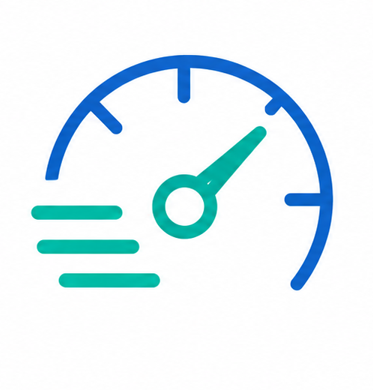

Візит лікаря додому
Огляд, план лікування та електронний рецепт без поїздки до клініки.
- Огляд терапевта
- План лікування
- Електронний рецепт
від 900 ₴ / візит
Записатися на візит лікаря додомуПриватна клініка поруч
Турботлива медична допомога від кваліфікованих фахівців — там і тоді, коли вам зручно. Запис займає кілька хвилин.
Зручна допомога поруч: лікар приїжджає до вас, а прості питання можна вирішити онлайн.
Вартість відома заздалегідь. Остаточну суму ви бачите перед підтвердженням запису.

Ми на зв’язку сім днів на тиждень. Результати й рекомендації зберігаються у вашому кабінеті.
Послуги та ціни
Ціна — орієнтовна, остаточна залежить від відстані та складності. Її підтверджують перед записом.
Огляд, план лікування та електронний рецепт без поїздки до клініки.
від 900 ₴ / візит
Записатися на візит лікаря додому.png)
Огляд і рекомендації для дитини без черг та поїздок до клініки.
від 1100 ₴ / візит
Записатися до педіатраВідповіді лікаря та план лікування без поїздки до клініки.
від 600 ₴ / консультація
Обрати лікаряЗабір матеріалу вдома та результати в особистому кабінеті. Вартість уточніть під час запису.
Записатися на аналізиCarePoint поруч
П’ять напрямів допомоги — оберіть той, що потрібен саме вам.
Професійний огляд і рекомендації у звичному для вас середовищі.
Уважна турбота про здоров’я дітей та підтримка для батьків.
Поговоріть із лікарем дистанційно та отримайте план подальших дій.
Забір аналізів удома та доступ до результатів у вашому кабінеті.
Допоможемо зорієнтуватися в послугах і спланувати наступний крок.
Лікар приїхав за дві години після запису. Усе пояснили зрозуміло, а рецепт одразу з’явився в кабінеті.
Із дитиною, яка хворіла, їхати до клініки не довелося. Педіатр уважно все оглянув і дав чіткі рекомендації.
Ціну я побачила до підтвердження запису, без сюрпризів. Онлайн-консультація минула спокійно й по суті.
Оберіть послугу, зручний час і формат — вдома чи онлайн. Остаточну вартість побачите перед підтвердженням.